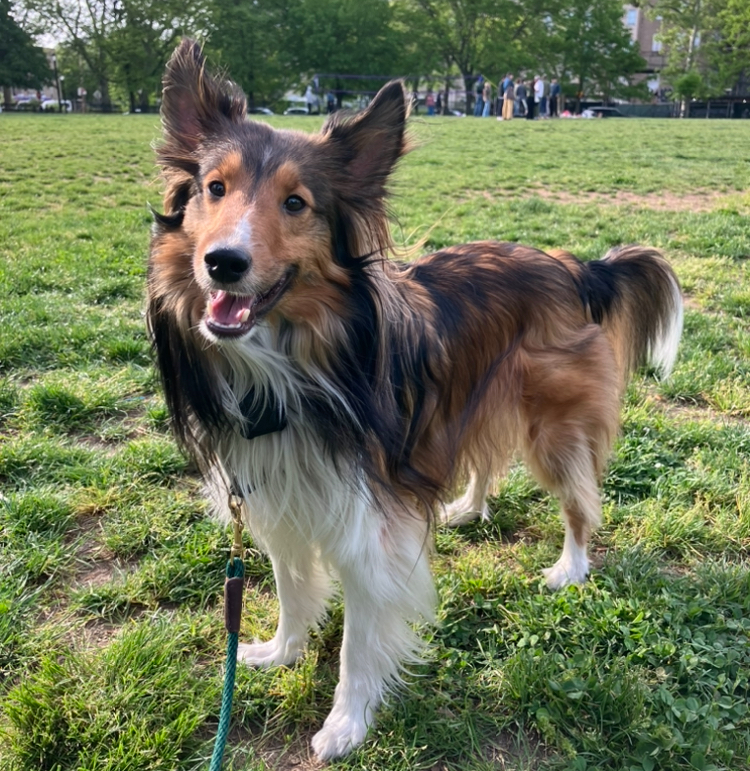
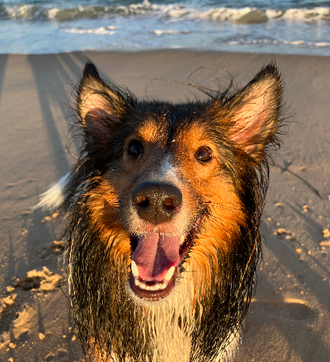

This is all about Nimi, my four year old dog! She is a Shetland Sheepdog, or Sheltie for short!

Nimi is a mahogany sable Sheltie, which means she has a dark brown coat and white ruff. She has a 3/4 collar, which means her white ruff does not go fully around her neck.
Nimi is four years old -- she was born in January 2022!
Nimi is the fifth sheltie I've owned in my life, but the first one that is just mine :D For more about my history with shelties, see the family page.
Shelties are a herding dog. Nimi doesn't get to herd that much since we live in the city, but she loves chasing squirrels, rats, pigeons, and motorcycles. When we visit my parents, we take her to the beach where she herds the waves.
